📅 基本資料
老師返工時間
8:15
學生返校時間
8:45
學生集合時間
9:00
出發時間
9:00
到達時間
9:30 - 9:45
分班拍照
到步後
回程集合
11:30
開車時間
11:45
交通安排
3架旅遊巴
集合地點
禮堂
⏱️ 時間安排
每個活動點
約 20 分鐘
📣 Briefing 安排
老師 Briefing
活動前 1-2 日
學生 Briefing
活動前 1 星期
📚 參與科目
中文
數學
科學
👥 班級資料
📖 中一 A 班
人數：33人
老師：3位
組數：6組
📖 中一 B 班
人數：32人
老師：3位
組數：6組
📖 中一 C 班
人數：31人
老師：3位
組數：6組
📖 中一 D 班
人數：32人
老師：3位
組數：6組
📋 分組規則
- 每班 6 組，每組 5-6 人
- 每班 3 位老師，每位老師負責 2 組
- 組長需於出發時將電話交給負責老師
- 其餘電話會收起，放於校務處
📍 目的地
地點
獅子會自然教育中心
地址
西貢巴士總站對面
開放時間
09:30 - 16:30
查詢電話
2792 2234
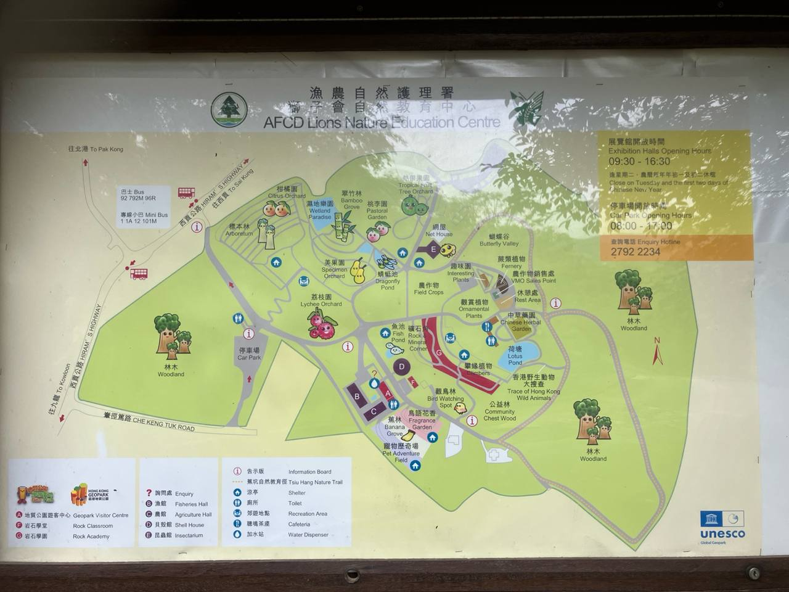
📚 學科活動 - 數學
🐟 第一站：魚館
開始時間：最遲 10:00
📝 題目一：抄低統計圖像
觀察並抄低以下任何一個統計圖像：


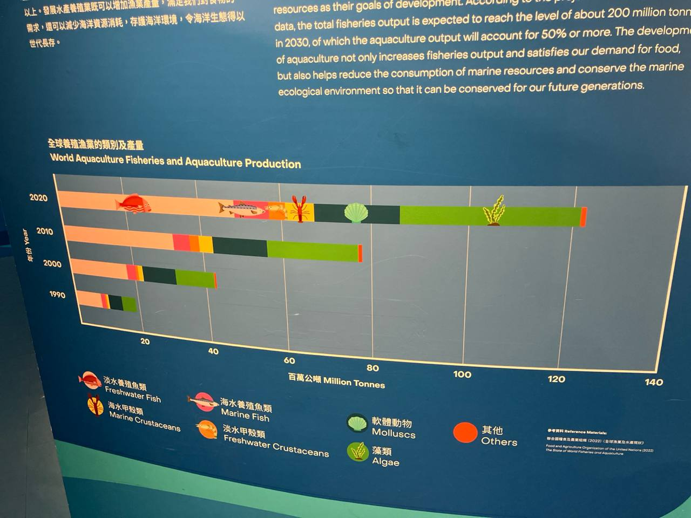
📝 題目二：改變統計圖像
將抄錄的統計圖像改為另外一種統計圖像顯示
🪰 第二站：蜻蜓池
📐 題目：量度周界
使用 1米尺 量度蜻蜓池的周界
準備物品：每位同學會預先收到 1米尺
💡 延伸題：估算方法
若果沒有 1米繩，可以用咩其他方法估算周界？
🏚️ 後備課題：農館 - 柱體的結構應用
地點：農館 (若魚館/蜻蜓池未能進行)
📐 題目：觀察柱體結構
觀察並記錄農館中柱體的結構應用：
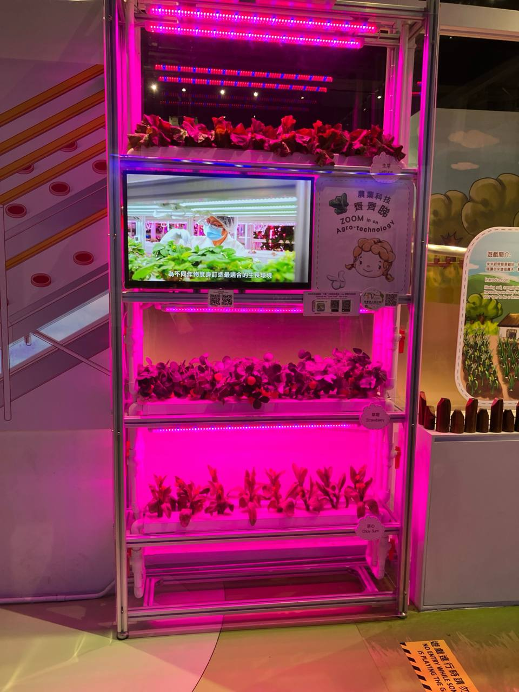
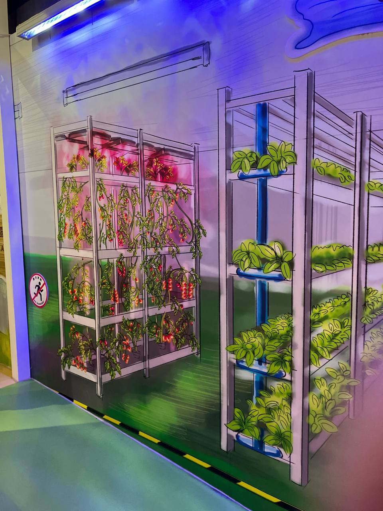
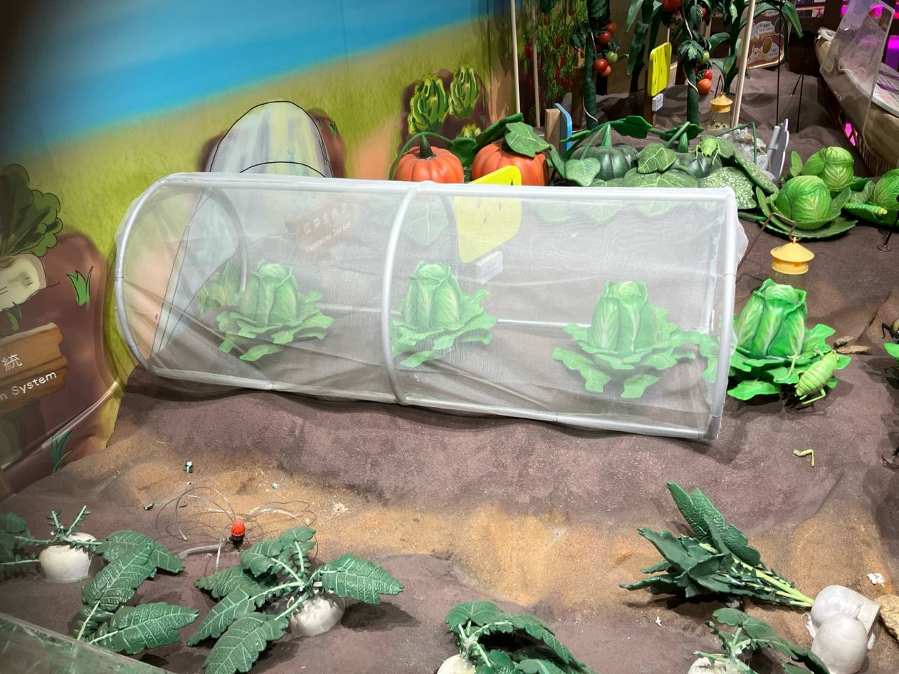
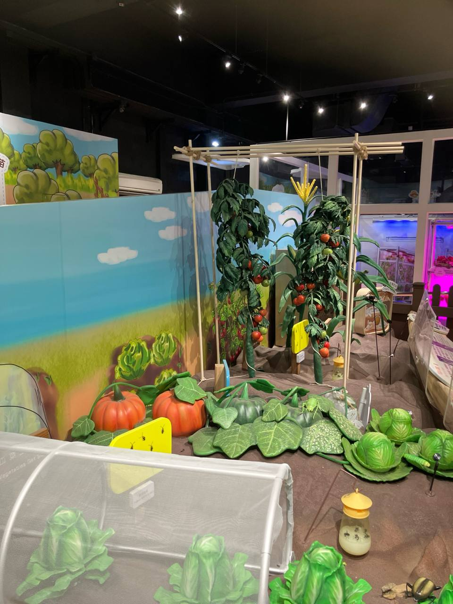
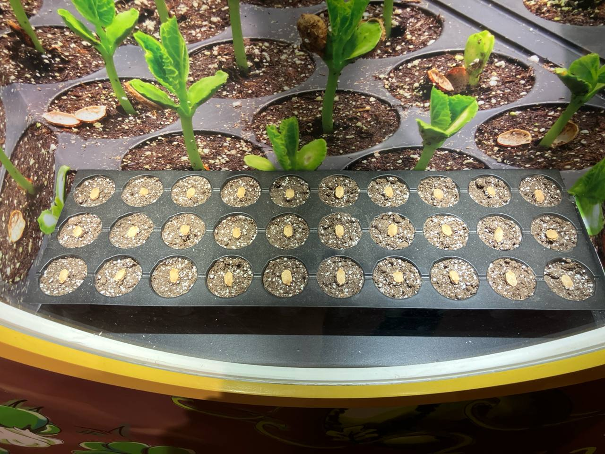
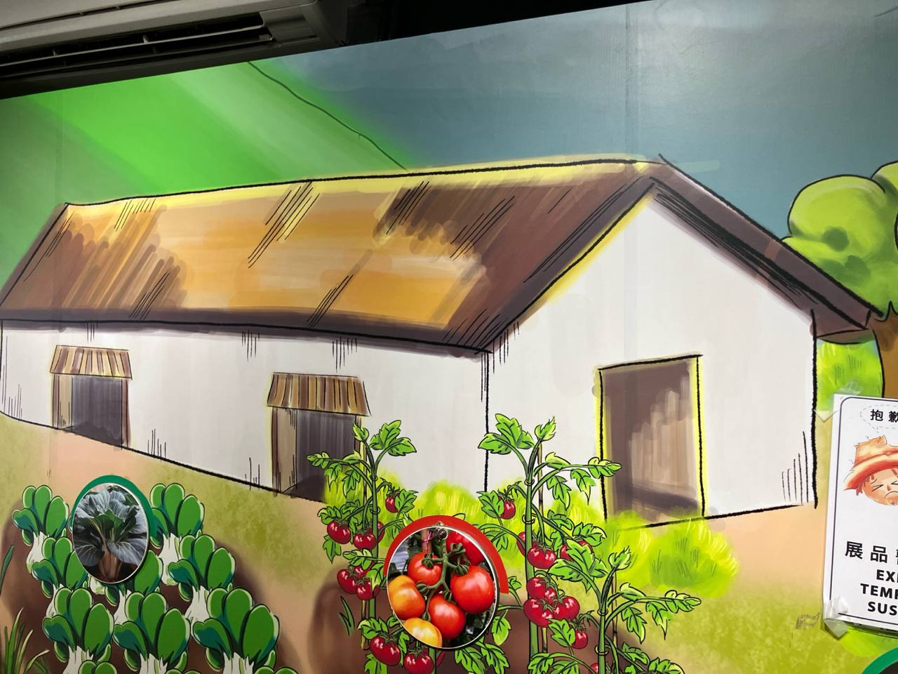
🏔️ 後備課題：地質公園遊客中心
地點：地質公園遊客中心
🪨 題目：觀察岩石結構
觀察並記錄地質公園遊客中心的岩石特徵：
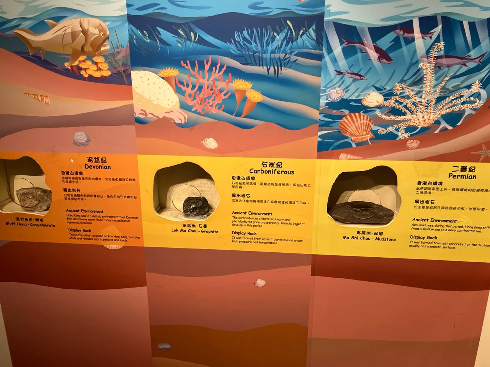
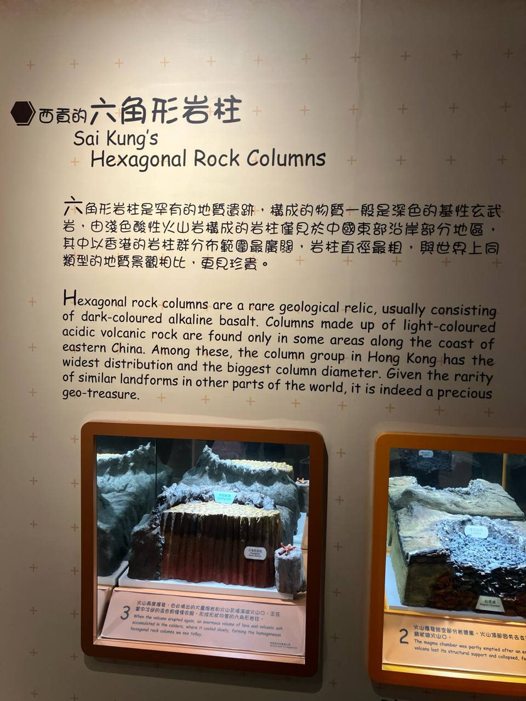
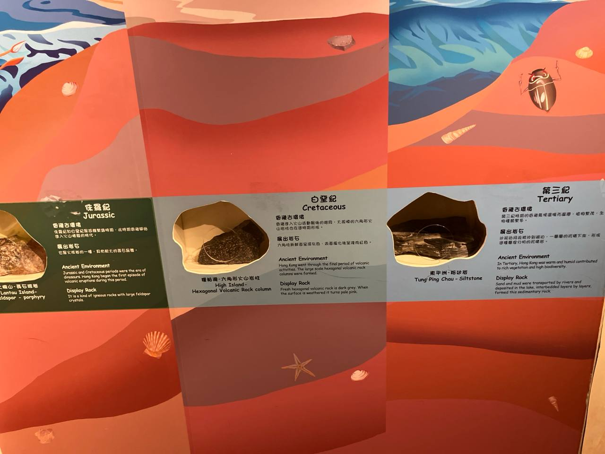
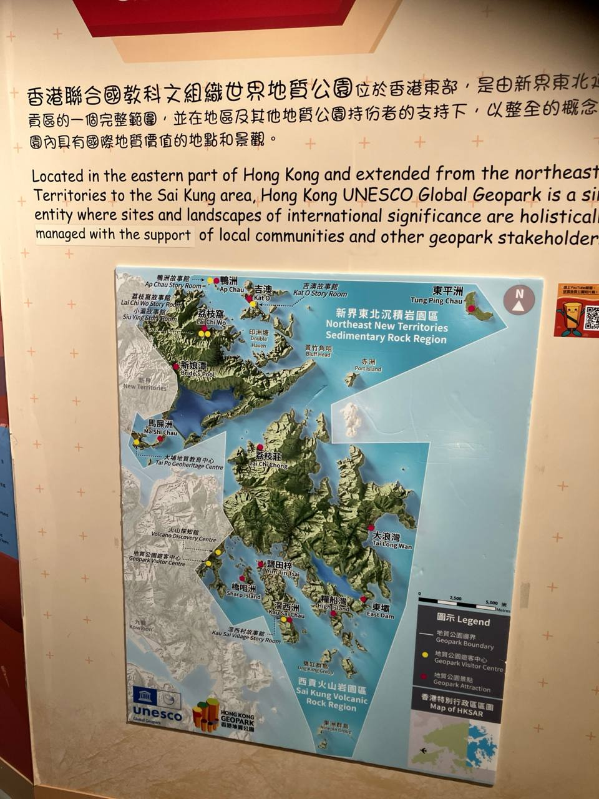
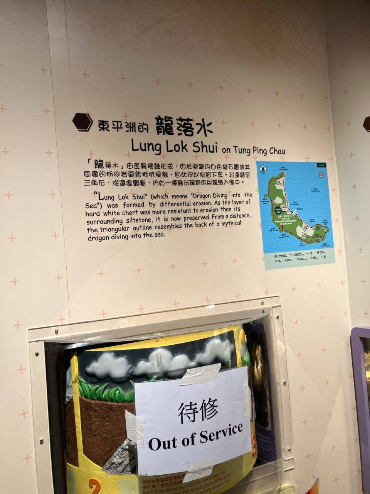
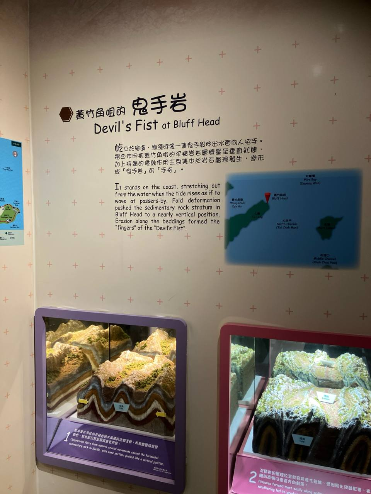
🐚 後備課題：貝殼館
地點：貝殼館 (雨天後備方案)
🏆 獎勵安排
完成四個任務
可獲得飲品或小食作為獎品
* 級團支出
🏫 活動安排
活動內容正在更新中...